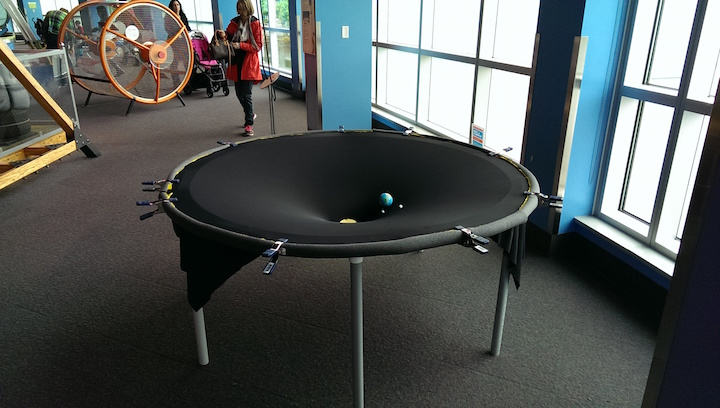
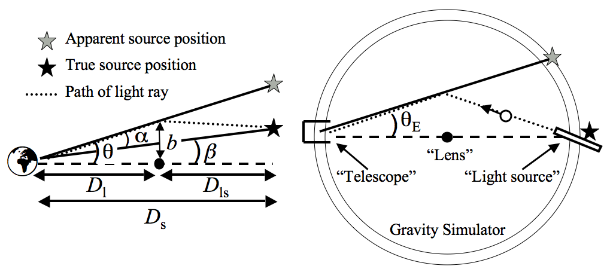

Public Outreach & Education
Here I am posting activities and worksheets I have developed, in the hopes that others find this useful (photos and more details to come!). These projects have been tackled in regular classrooms, during astronomy and physics summer camps, and at Science World in Vancouver, BC.
Feel free to use and/or modify the materials! If you make any improvements that you found worthwhile, or have any requests or ideas for me, I would love to hear about it. If you are looking for a scientist to visit your classroom (in Seattle, WA or Vancouver, BC, or somewhere in between), please reach out and we can discuss.
Contact me at: jesford@uw.edu
Activities:
- Gravitational Lensing: Here are two different activities
that are complementary, and can be explored either individually or
sequentially.
- Simulating gravitational lensing effects using the base of a wineglass to make arcs and multiple images. Here is the student activity worksheet I have developed. Excellent resources on creating the lenses, the physical principles, and more activity ideas are in the original paper on the wine glass demo, and more recently here. If there is time, I usually lead into the topic of lensing by talking about cosmology and dark matter, using a version of these slides (at the end are some classroom-wide "find the lens" challenges that we do after the hands-on wineglass investigations).
- Using a large "gravity simulator" to observe particle trajectories, such as photons in a gravitational potential (and many other general relativity investigations are possible with this demo). See our recent paper describing how we built the simulator and led the activities.

- Cloud Chamber: If you have ever seen a cloud chamber (a chamber containing some type of fog through which you can see tracks condensing and highlighting the paths of subatomic particles), you will never forget it! It's as close to actually seeing electrons, muons, alpha particles, gamma-rays, etc, as you will ever get. This hands-on experiment actually allows students to build their own tiny cloud chamber using nothing but items you can buy at a dollar store... plus some dry ice (which I usually obtain through the chemistry department at my university, and which is a safety hazard, so requires some extra precaution). Here are the slides I have used to introduce the activity, walk through set-up, and wrap up with some interesting astronomical phenomena. Depending on the level of the students (I've succesfully done this with middle school through high school students) I sometimes have them work through this worksheet and then we talk about measurement uncertainty and a little statistics. I found this blog post extremely useful when I was first getting started with this activity.
- Galaxy Zoo: While the Zooniverse website contains dozens of engaging and really interesting citizen science projects to use in your classroom (as well as a lot of good teacher resources), I've tended to focus on Galaxy Zoo for an in-class activity. Here are the slides I use as an introduction (putting it in the context of cosmology, cause that's my thing), and then I have the students work through some galaxy classification in pairs (this obviously requires computer access). We usually wrap up by doing a some galaxy art (oil pastels on black paper work great - see the last slide in this presentation for an example) because galaxies are so beautiful and diverse. I have also given a more general citizen science homework assignment where students choose one of the projects that interests then, and then present an overview of the scientific questions and method to their fellow students in class.
- Cosmology: Here is an example of the slides that I use for talking about cosmology. I really love showing the SDSS flythrough of the universe (it's real data!), often following up with a Millenium Simulation flythrough (the other/dark stuff we can't see by eye!). Usually these presentations get tied into either the gravitational lensing activity or a general relativity activity.
- Physics of Music: Why does the same note sound different when played on different instruments? This activity requires some fairly specialized lab equipment, which my university at the time (UBC) had available for undergraduate physics labs. I had high school students bring in their instruments (their own voice was an option!) and we played into a microphone connected to some computer software that analyzed the Fourier Spectrum. It is really cool to see how the same note has very different overtones for different instruments and for the human voice singing different vowels. This is the worksheet that we used.
- Extreme Sports Physics: Because of my background as a competitive snowboarder, I've always been fascinated by understanding the complex physics that describes my trajectory through the air, and the role of angular momentum. Here are some slides I used when introducing the topic of free-fall to middle school and high school students. I built a bunch of "mystery center-of-mass rods", which were tubes containing a hidden (interior) weight at some arbitrary point. Students had to find and mark the center-of-mass with a piece of colored tape. Then they tossed it to a partner, flipping it randomly through the air, while I filmed it with a high-speed camera. This video was projected onto a whiteboard in slow-motion, where we traced out the path of the center-of-mass, visible by the colored tape. The center-of-mass follows a perfect parabola, and everything else rotates about that point, just like the more complicated (non-rigid) human body when hurtling through the air!
- Gravity: See our recent paper on building and using a large gravity simulator. There are a ton of great activities that can be done with this set-up. I'll post more examples eventually, but you can find a ton of great ideas by searching the web.
- Thermodynamics and more: hydraulics, bouyancy, pressure... I'll add descriptions of these activities as I find the time. Several year ago I ran an entire day full of activities related to fluid dynamics for a group of middle school students, the outline of which is here (it's brief, but it might give you some ideas for activities, and I'm happy to answer any questions by email).

